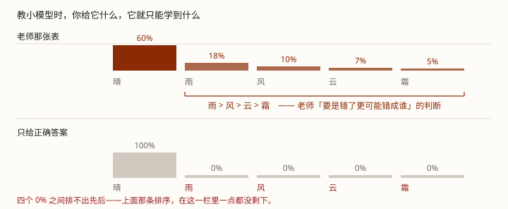

手机里那个几 GB 的小模型，凭什么也能写代码、做数学题？它是被人教出来的——教法还很特别。
上一课的量化只是换了个存法，模型学到的东西一个没动。那真正让小模型变强的是什么呢？是有人教它。
这件事有个名字，叫蒸馏（distillation）：让一个小模型照着一个大模型学，学的不只是答案。大的那个叫老师，小的叫学生。
先拆一个最容易闹的误会：蒸馏不是"把大模型的答案抄下来，给小模型背"。只抄「答案那一个字」恰恰是里面最差的一种做法——第 2 节拿实测给你看，三种教法一比就分出高下。
学完这课，你能说清「量化」和「蒸馏」各改了什么、小模型为什么这么强，还能说清为什么"题做得好"不等于"活干得好"。
教一个小模型时，你给它什么，它就只能学会什么。只给答案，它背下的是题目；连老师"猜错会错成什么样"一起给，它才学到老师的判断方式。
后面每一节都挂回它。
蒸馏（distillation）是训练小模型的一种做法：老师由一个已经练成的大模型来当，学生照着老师给的东西学。它发生在训练的时候——和第 0 课一样出题、扣分、往少扣分的方向拧，变的只是"照着什么练"：不光给正确答案，老师给的那张表整个都是学习目标（那张表是什么，第 2 节细讲）。练完，小模型还是那个小模型，本事变了。
它常和上一课的量化混着讲，可两件事改的完全不是同一个东西：
| 量化（第 6 课） | 蒸馏（本课） | |
|---|---|---|
| 改什么 | 怎么存：每个数占几个字节 | 从哪来：拿谁当老师 |
| 模型的本事变了吗 | 没变，一个数都没少 | 变了，学的是别人的本事 |
| 什么时候做 | 部署之前 | 训练的时候 |
量化管「怎么存」，蒸馏管「从哪来」。所以顺序是先蒸馏变小、再量化压小。反过来做，等于把一个本来就没学好的模型再压一遍——它还没学会，你就先把它压扁了。
接着上一段说的"照着什么练"。第 0 课那套训练，学习的目标是一张表：答对的那个字拿满分，其他字全是 0。
可模型每次作答，实际给出的是另一张表：每个字各有多可能——晴 60%、雨 18%、风 10%……这些百分比就是每个字的概率；这张表本课叫概率表，行话叫分布。
蒸馏的做法不一样：它把老师那一整张概率表当成学习目标——不光是答案那一格，那几个"错"字上的概率也要照着学。
要对到什么程度？是数字要对上，不是顺序对了就行。学生那 5 个百分比，要一个一个跟老师的尽量一样——连答案那一格的 60% 也在内。顺序不用单独去管：数字对上了，"雨大于风大于云大于霜"自然就出来了。可要是只给正确答案，那四个"错"字全变成 0%，顺序就再也排不出来了——下面这张图专门说的就是这件事。

那些"错"字上的概率，为什么不是噪声？「蒸馏」这个叫法的出处——Hinton 他们 2014 年的那篇论文——里有个很好的例子：模型看图认错了，错成「垃圾车」的可能性，仍然比错成「胡萝卜」大好几倍。
拿天气那个例子说：正确答案只说「这一次是晴」，老师却把话说到第二层——「要是我错了，多半错成下雨，不会错成下霜」。雨 18% 不是说这道题会答错，是说这种情况后面接「雨」的可能性本来就有这么大；这句话里就藏着它的判断方式。而只给正确答案的表里，这一层信息一点都没有。
为什么值得多花这个力气？Hinton 那篇论文里有一句总结：我们能让小模型「用和老师一样的方式去泛化」。泛化，就是把规律用到没见过的题目上。所以学生学的不是答案，是老师的泛化方式。（英文原句 "we can train the small model to generalize in the same way as the large model"，放在文末资料里。）
上面那张图里，尾部四个数是 18% / 10% / 7% / 5%——分得开，看得清谁大谁小。但很多情况下不是这样。
回想第 0 课那个玩具：训练完，老师给「好 / 冷 / 差」三个几乎一样的概率（32.7% / 34.2% / 33.0%），因为语料里三种都出现过、且差不多多。那种时候，排序信息本来就很弱。
真正要命的是反过来的情况：模型非常确定第一名（99%），其余候选全挤在 0 附近。那时候"第二名是谁"根本就被吞掉了。可"第二名是谁"恰恰最有用：万一答案不是第一名，第二名多半就是那个错得最像的答案。
所以蒸馏会先把老师加热。不是真的给模型升温，而是把这张表往"平"的方向拉：最高的那根柱子压矮一点，贴着 0 的那几根抬起来——尾部从"全是 0"变成看得见的百分比，谁大谁小就看出来了。表从"一根柱子独大"变成"几根都看得见"，就说它被调软了。这一步的正式名字是温度（temperature）。Hinton 那篇的原话是：「把最后一次 softmax 的温度往上抬，直到老师给出一组足够软的目标；训练小模型时，我们用同样高的温度。」（softmax 就是把每个字的分数换算成百分比的那一步。还有个容易撞见的说法：不谈温度，直接让小模型去对齐老师给每个字的原始分数（行话叫 logits）——Hinton 说，那只是蒸馏的一个特例。）
说准确一点：学生要对齐的，是加热之后那张表——老师和学生用同一个温度（Hinton 那句"训练小模型时，我们用同样高的温度"，说的就是这件事）。那这算不算把老师的分布改了？数字是换了，可谁大谁小、谁比谁像，一样都没动——加热只负责把尾部抬到看得见。
还有一种情况：如果那几个候选的原始分数本来就一模一样呢？加热也分不开它们——它们照样一样平。加热只能把"有差距、只是被压扁了"的那部分救回来；本来就没有的差距，谁也造不出来。
所以温度是两头都不能要的：太低，尾部被压成一条线——老师自己的表里就已经没了的东西，学生自然也学不到，蒸馏最值钱的那一层等于白搬；太高，尾部被抹平，谁大谁小都一样，学生学到的排序是糊的。第 7 节的脚本把这两个方向都跑出来了。
这个旋钮你见过——它就是第 1 课挑字时那个 temperature。同一个旋钮，训练和生成两头都在用：训练时把老师的表摊开，生成时决定挑哪个字。
你以后读到的资料里，「蒸馏」会被用来指两种不同的做法。分不清，就会觉得资料在互相打架：
还有第三条路，不该算在蒸馏头上：用大模型来造教材。phi-1.5 走的就是这条路——它让已有的大模型写出"教科书级"的语料，拿这批语料练出一个 13 亿个数的小模型，在很多语言任务上和比它大 5 倍的模型相当。
所以「小模型为什么这么强」的诚实答案是：三条路一起走——造更好的数据 · 蒸馏 · 更好的后训练，不是"全靠蒸馏"。只记住"小模型是蒸馏来的"，就会连带推出"小模型一定继承了老师的一切"——那个推论是错的，下一节就是它的反面例子。（2025 年起还有一种主流练法，把「谁来写」也反了过来：学生自己写、老师逐字批。）
上一节说，"小模型是蒸馏来的"推不出"它继承了老师的一切"。这一节拿实测看两件事：它到底到了哪，还有它没到哪——下面是R1 官方仓库的实测表，前两行是蒸馏出来的学生，第三行是老师 R1 本人。先认一下那几门"考题"（分数按百分制看，就是一次答对的比例）：
| 模型 | AIME 2024 | MATH-500 | GPQA Diamond | LiveCodeBench |
|---|---|---|---|---|
| R1-Distill-Qwen-1.5B（15 亿个数） | 28.9 | 83.9 | 33.8 | 16.9 |
| R1-Distill-Qwen-7B（70 亿个数） | 55.5 | 92.8 | 49.1 | 37.6 |
| DeepSeek-R1（老师，671B＝6710 亿个数） | 79.8 | 97.3 | 71.5 | 65.9 |
先看它到了哪。这不是"勉强能用"：70 亿个数的学生，500 道数学题考 92.8 分，高中生数学邀请赛考 55.5 分；15 亿个数的，500 道数学题也有 83.9 分。这些题都是给人出的真题——蒸馏确实把本事搬过去了。
再看它没到哪。先说清表里三行是谁：前两行都是学生（名字里的 Distill 就是"蒸馏来的"），第三行是老师 R1 本人。论文说学生"超越了它自己的指令版"——"指令版"是同一个底座系列里、没经 R1 教、按常规指令训练出来的那一版（1.5B 那行的底座是千问的 Qwen2.5-Math-1.5B）。所以"有提升"比的是同尺寸的过去，不是小的追平大的——和老师那行一比就清楚了：同样几门考题，老师是 79.8 / 97.3 / 71.5 / 65.9，学生还差一截。
那"没被 R1 教过"的原版到底多强？千问自己的技术报告里有成绩——考法和 R1 那张表不同，只能当参考，换成同一把尺子（30 道 AIME 题答对几道）看：Qwen2.5-Math-1.5B-Instruct 答对 3 道，7B 那版答对 5 道；R1 教出来的两个学生折算下来约答对 8.7 道和 16.7 道。同一个底座，只差"被 R1 教过"这一件事，差距大致是 3 倍。
个头的差距也还在：同一门高中生数学邀请赛，15 亿个数那版考 28.9，70 亿个数那版考 55.5。这说明的不是蒸馏的功劳，而是：就算用同样的蒸馏方法，参数量大的还是更有优势——蒸馏不抹平大小差距（那老师是不是越大越好）。
而且四门考题里，它不是门门都强。那份博士级的科学题（GPQA）上，70 亿个数的学生只有 49.1 分。论文还拿人当过标尺：连老师 R1 本人，在这门题上也没比过能上网查资料的博士。（人类对照是 R1 论文自己量的，量的是老师 R1，不是表里这两个学生。）
本轨道讲的每件事，最后都要回到 agent。这一课的问题就是：一个蒸馏出来的小模型，能不能拿来跑 agent？
这个问题有一条论文自己写的答案，而且写在它的「局限」那一节里。R1 论文的原话：它的结构化输出能力「比现有模型差」，下一句更直接——「DeepSeek-R1 无法使用工具」，搜索引擎、计算器都用不上。
为什么这条对 agent 要命？因为agent 的命脉恰恰就是工具调用（见 Agent 原理篇 · 第 2 课）。把两句放一起，结论就出来了：蒸馏搬的是「想」的本事，"格式"和"动手"这两维不在教材里——所以蒸馏模型"想"这一维可能很强，"格式和动手"未必（那工具调用能不能也蒸给小模型）。
这和第 6 课的结论是同一条：那边说"格式敏感的活，量化掉得最多"，这边说"推理强的模型，工具调用未必行"。
所以这一课交给你的判断是：别拿跑分替你自己的任务做决定。至于换模型之后该测什么、怎么测，那是做法不是机制，写在技巧篇 0002 · 技巧六里。
脚本在工作区：exercises/llm/0007-distillation.py。只用 Python 自带的功能，离线能跑。它做一个能真量出来的小实验：
造两份故意排得不一样的语料（老师说「雨比云更可能」，学生自己的数据说「云比雨更可能」），然后用三种教法训练三个学生——骨架一样、步数一样，只有"你给它什么"不同。
python exercises/llm/0007-distillation.pyWindows 终端若中文乱码，先执行 chcp 65001。下面是输出摘录（跑了就有完整的）。
[1] 先造两份语料。它们故意排得【不一样】——这是本脚本的关键
来源 规模 晴 雨 风 云 霜 尾部排序（非第一名）
老师见过的 100 60% 18% 10% 7% 5% 雨 > 风 > 云 > 霜
学生手上的 50 60% 10% 10% 12% 8% 云 > 雨 > 风 > 霜
——老师说「雨比云更可能」，学生自己的数据说「云比雨更可能」。
所以「雨 > 风 > 云 > 霜」这个排序，只存在于老师的分布里。
[3] 三个学生，骨架一样、步数一样，只有「你给它什么」不同
教法 离老师多远 尾部排序 尾部差距 第一名多自信
A 正确答案（one-hot） 0.080 错 4.0 百分点 60%
B 只搬老师的答案（argmax） 0.400 并列 0.0 百分点 100%
C 搬老师的整张分布（蒸馏） 0.000 对 13.0 百分点 60%
（老师自己的尾部差距是 13.0 百分点）
A 正确答案（one-hot） 晴 60.0% 雨 10.0% 风 10.0% 云 12.0% 霜 8.0%
B 只搬老师的答案（argmax） 晴 100.0% 雨 0.0% 风 0.0% 云 0.0% 霜 0.0%
C 搬老师的整张分布（蒸馏） 晴 60.0% 雨 18.0% 风 10.0% 云 7.0% 霜 5.0%
[4] 三条要看懂的
A 离老师 0.080，尾部排序错（差距只有 4.0 百分点）。
它学到的是【学生自己那份小语料的频率】——语料里没有的东西，它学不到。
B 离老师 0.400，尾部并列，第一名拿了 100%。
这是最糟的一档：整套排序全丢了，还额外得到一个【过度自信】的学生。
「只搬老师的答案」听起来像蒸馏，其实不是。
C 离老师 0.000，尾部排序对，差距 13.0 百分点——和老师一样。
它没有见过老师那份语料，只是照着那 5 个数反复拧，就复现了老师的排序。
——被搬过来的不是答案，是【泛化方式】。
[5] 那为什么要【加热】老师（temperature）？看尾部就明白了
温度 晴 雨 风 云 霜 尾部排序
0.5 87.8% 7.9% 2.4% 1.2% 0.6% 雨 > 风 > 云 > 霜
1.0 60.0% 18.0% 10.0% 7.0% 5.0% 雨 > 风 > 云 > 霜
3.0 31.8% 21.3% 17.5% 15.5% 13.9% 雨 > 风 > 云 > 霜
8.0 24.1% 20.7% 19.2% 18.4% 17.6% 雨 > 风 > 云 > 霜
——注意这个玩具里【排序】四种温度下都没变（雨>风>云>霜）。
真正被温度改变的是【尾部之间的差距】：
0.5 档：尾部挤成 7.9% / 2.4% / 1.2% / 0.6%——四个数已经快贴成一条线；
（这个玩具只有 5 个候选，再挤也挤不到 0；真实词表是几万量级，
所以实际训练里尾部会被压得更狠，这是要留意的方向。）
8.0 档：尾部被抹平到 20.7% / 19.2% / 18.4% / 17.6%——谁大谁小也看不清了。
所以温度是【两头都不能要】：太低压掉尾部，太高抹平尾部。摘录里有三处要看懂（「离老师多远」是个 0 到 1 的差距数：0 ＝和老师一模一样，越大差得越多）：
Q1 蒸馏和量化，最本质的区别是什么？
Q2 蒸馏时，除了正确答案，还要给模型什么？
Q3 蒸馏要学生对齐的，到底是老师表上的什么？
Q4 训练时明明有正确答案，为什么还要老师那张表上"错"字的概率？
Q5 为什么蒸馏要先调高温度？
Q6 加热会不会把老师本来没有的信息加进去？
Q7 「只把小模型的答案换成老师的答案」，算蒸馏吗？
Q8 「小模型为什么这么强」，最诚实的说法是？
Q9 一个蒸馏小模型推理题做得很好，为什么不能就此断定它能跑 agent？
上面这些够你看懂全貌了。读的过程中如果冒出疑问，点对应的链接就行——不用从头看进阶版。
Distilled Model Evaluation 表；老师那行 79.8 / 97.3 / 71.5 / 65.9 取自同页另一张 DeepSeek-R1-Evaluation 表（同一套考题；AIME／MATH-500／GPQA 同为 pass@1，LiveCodeBench 那格标的是 Pass@1-COT）。另："蒸馏模型是拿 R1 生成、筛出的 80 万条样本微调出来的"（第 4 节），学生各有一个底座（仓库 Base Model 列：Qwen2.5-Math-1.5B／Qwen2.5-Math-7B）。Qwen2.5-Math-1.5B-Instruct AIME 2024 答对 3/30、7B-Instruct 答对 5/30（CoT 只答一次的那档）。⚠ 它的考法与 R1 那张表不同（R1 是抽 64 次估 pass@1），所以课里换成"30 道答对几道"当量级参考，不并进同一张表。RESOURCES.md 里。
同课进阶：进阶版 · 抄什么、扣什么、怎么练
前置：LLM 底层 · 第 6 课 · 量化（另一半；两课合起来才是"让模型变小"这件事）· 第 5 课 · 它真的在思考吗？（"搬家"的两个理由之一，另一个是第 0 课的规模）
顺着往下：LLM 底层 · 第 8 课 · 这件事到底是谁干的——四层各干各的活，把这条轨道收尾
接下来往哪走：Agent 原理篇 · 第 1 课（真动手做一个）· 技巧篇 0002 · 技巧六（换模型之后测什么——本课第 6 节那条判断的做法版）
术语表：蒸馏 distillation · 量化 quantization · 温度 temperature · Logits / Softmax